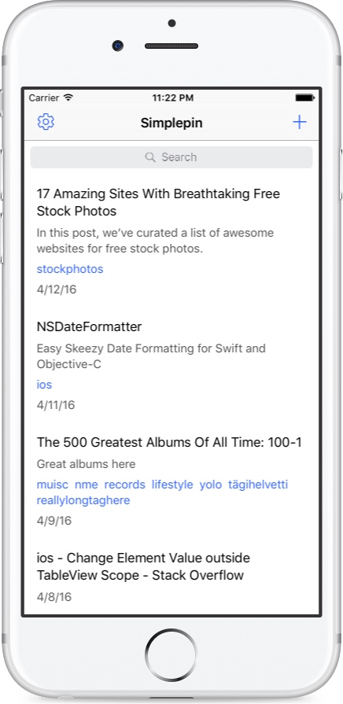

Simplepin
A simple app for your Pinboard bookmarks
Simplepin makes reading and managing your Pinboard bookmarks easy. With just the most basic features done right, it's a good companion for any Pinboard user.

Simplepin makes reading and managing your Pinboard bookmarks easy. With just the most basic features done right, it's a good companion for any Pinboard user.